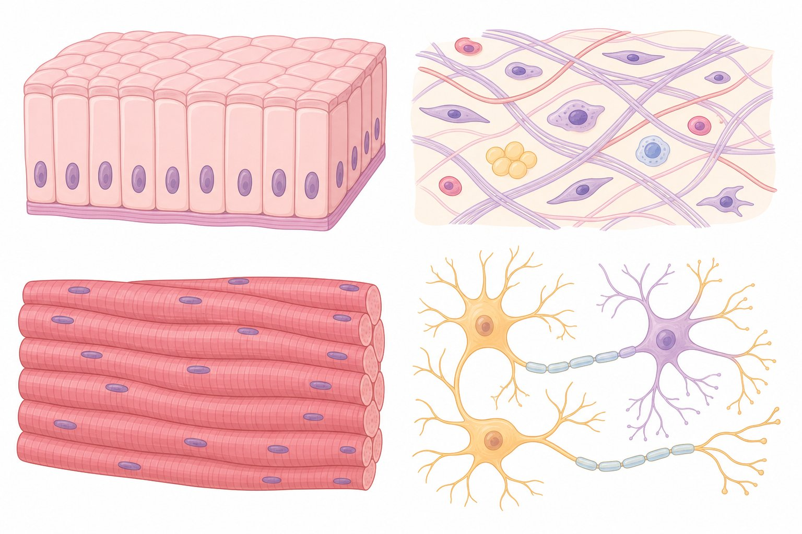

📖 Os Tijolos do Corpo Humano
Células semelhantes se organizam em tecidos; tecidos formam órgãos; órgãos formam sistemas. O corpo humano possui quatro tipos básicos de tecidos: epitelial, conjuntivo, muscular e nervoso.

🧱 Tecido Epitelial
O tecido epitelial reveste superfícies (pele, mucosa do intestino) e forma glândulas (sudoríparas, salivares). Suas células são justapostas, com pouquíssima matriz extracelular, e se renovam constantemente.
💡 Dica ENEM: Epitélio de revestimento protege; epitélio glandular secreta. Na pele, ele é avascular — se alimenta por difusão do tecido conjuntivo abaixo.
🩸 Tecido Conjuntivo
O tecido conjuntivo é o mais abundante do corpo: une e sustenta outros tecidos. Diferente do epitelial, tem muita matriz extracelular, rica em fibras (colágeno e elastina).
| Tipo | Função |
|---|---|
| Conjuntivo propriamente dito | Preenche, protege e nutre (derme, tendões) |
| Adiposo | Reserva de energia, isolamento térmico |
| Cartilaginoso | Sustentação flexível (orelha, nariz, discos) |
| Ósseo | Sustentação e proteção; matriz mineralizada |
| Sanguíneo | Transporte de gases, nutrientes e defesa |
💪 Tecido Muscular e Nervoso
O tecido muscular é especializado em contração e movimento. Já o tecido nervoso é especializado em conduzir impulsos: viva o neurônio 3D acima!
| Tecido | Característica |
|---|---|
| Estriado esquelético | Contração voluntária; preso aos ossos. |
| Estriado cardíaco | Contração involuntária; células ramificadas (coração). |
| Liso | Contração involuntária; órgãos internos (estômago, vasos). |
| Nervoso | Neurônios + células da glia; condução do impulso. |
💡 Dica ENEM: Estriado ≠ voluntário: o cardíaco é estriado mas involuntário — pegadinha clássica! O liso é sempre involuntário.